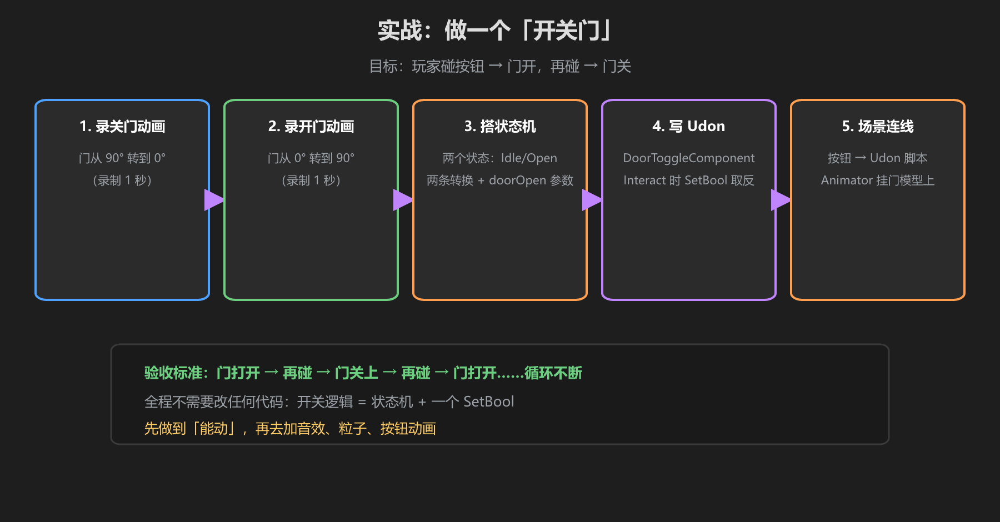
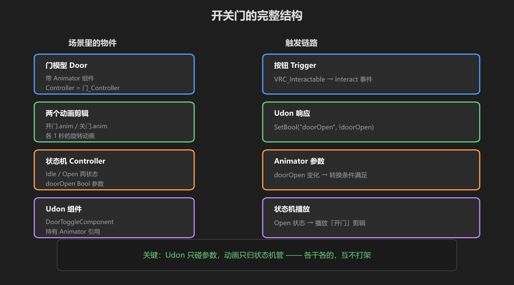

第 5 篇：动手做一个开关门
把前四篇串起来：录两段动画 → 搭状态机 → 写 Udon → 场景连线，做一个玩家可交互的开关门。

图：五步流程 — 建门 → 录动画 → 状态机 → Udon → 连线测试
第一步：建门
- 创建 Cube（0.1 × 2.2 × 1.2），放在门框位置，改名
Door - 确保门的旋转轴在门边（把门放到门框一侧，用空父物体做轴心）
第二步：录动画
- 选中 Door →
Window → Animation - 创建
Door_Closed：不动，1 帧即可 - 创建
Door_Open：0s 记当前旋转，0.5s 旋转 -90°（朝里开） - 再创建
Door_Close：反向录一遍（从开到关）
第三步：搭状态机
- Project 右键 →
Create → Animator Controller，命名DoorController - 双击打开 Animator 窗口，建三个状态：Closed / Open / Closing
- 给每个状态挂上对应 Clip
- Closed 设为默认状态（绿色）
- 加参数
isOpen（Bool） - 转换：Open → Closed（isOpen == false）、Closed → Open（isOpen == true）、Closing 播完 → Closed
第四步：写 Udon 组件
public class DoorComponent : UdonSharpBehaviour
{
public Animator doorAnimator; // Inspector 拖入
public override void Interact() // VRChat 玩家交互入口
{
bool isOpen = doorAnimator.GetBool("isOpen");
doorAnimator.SetBool("isOpen", !isOpen); // 开关切换
}
}第五步：连线与测试
- Door 上挂 Animator（填 DoorController）+ VRC_Interactable + DoorComponent
- 把 DoorComponent 的 doorAnimator 拖入 Animator 组件
- Build & Test：走近门 → 交互键 → 门开；再按 → 门关
- 检查：开门时有没有卡顿、门有没有"瞬移"

图：门完整结构 — 门物体 + Animator + VRC_Interactable + Udon 组件
进阶玩法：把开关信号走你的架构（Trigger → SignalSender → DoorComponent），同一扇门就能被按钮、摇杆、拾取物同时触发了。
学前检查清单
- 完成了一个可交互的开关门
- 录了三段动画并搭好状态机
- 用 Udon 的 Interact 控制开关
- 测试了开/关循环没有 bug